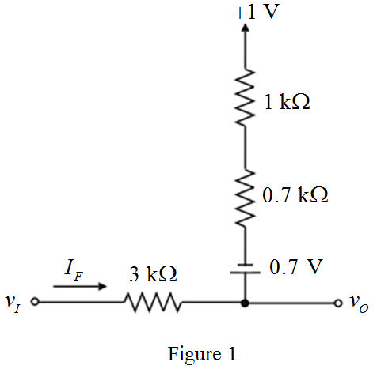
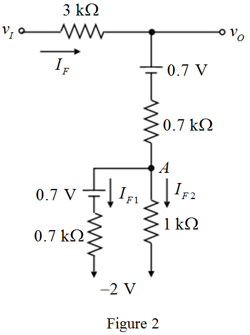
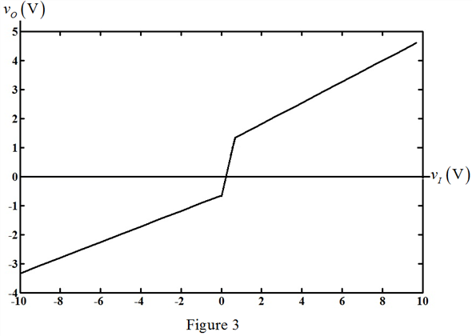

Step 1:
Refer to Figure P4.93 in the text book.
The input voltage range is,  .
.
The forward voltage drop of the diodes is  at a current of
at a current of  .
.
Determine the value of diode forward resistance, .
For the input voltage greater than , the diode is forward biased and diodes,
, the diode is forward biased and diodes,  and are reverse biased.
and are reverse biased.
Redraw the diode circuit for voltages less than  by replacing the diode with its equivalent circuit.
by replacing the diode with its equivalent circuit.

Step 2:
Apply Kirchhoff’s voltage law to the loop in Figure 1.
Apply Kirchhoff’s voltage law to the input-output loop.
The output voltage is,
Substitute for  in the equation.
in the equation.
Thus, the expression of output voltage for  in the range, is,
in the range, is,
Step 3:
For the input voltage less than  and for all negative voltages, the diode,
and for all negative voltages, the diode,  is reverse biased and diodes, and are forward biased.
is reverse biased and diodes, and are forward biased.
Redraw the diode circuit for voltages less than  by replacing the diode with its equivalent circuit.
by replacing the diode with its equivalent circuit.

Step 4:
Apply Kirchhoff’s voltage law to the second loop in Figure 2.
…… (1)
Apply Kirchhoff’s voltage law to the first loop in Figure 2.

…… (2)
Apply Kirchhoff’s current law at node-A.
Substitute for in equation (2).
…… (3)
Step 5:
Substitute for in equation (1).
Substitute for  in equation (3).
in equation (3).
Step 6:
From Figure 2, the expression for output voltage is,
Substitute for and for .
Thus, the expression or output voltage for  in the range, is,
in the range, is,
The expression for output voltage is,
For the input voltage equal to , the slope of the characteristic is and for input voltage equal to, the slope of the characteristic is.
, the slope of the characteristic is and for input voltage equal to, the slope of the characteristic is.
Step 7:
Plot the input voltage, versus output voltage, graph using the relation for input voltage ranging from to .
versus output voltage, graph using the relation for input voltage ranging from to .

Thus, the voltage transfer characteristic of the circuit is drawn.